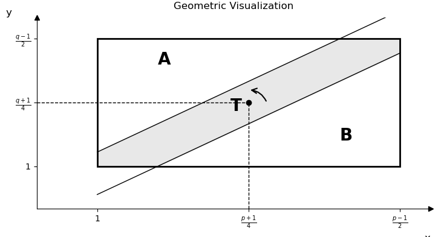

Number Theorem 11th note
Theorem 11.1 (Quadratic reciprocity)
If \(p\) and \(q\) are distinct odd primes, then
except when \(p \equiv q \equiv 3\operatorname{mod}4\), in which case
or equivalently
Pf
Let \(P = \left\{ 1,2,\ldots\frac{,(p - 1)}{2} \right\} \subset U_{p}\) and \(N = ( - 1) \cdot P\) as before, and let \(Q = \left\{ 1,2,\ldots\frac{,(q - 1)}{2} \right\} \subset U_{q}\). By Gauss's lemma, \(\left( \frac{q}{p} \right){= ( - 1)}^{\mu}\), where \(\mu = |qP \cap N|\) is the number of elements \(x \in P\) s.t. \(qx \equiv n\left( \operatorname{mod}p \right)\).
This congruence is equivalent to \(qx - py \in N\) for some \(y \in {\mathbb{Z}}\), that is (1)\(- \frac{p}{2} < qx - py < 0\) for some \(y \in {\mathbb{Z}}\).控制 Given any \(x \in P\), it is clear that (1) holds for at most one \(y \in {\mathbb{Z}}\). If such \(y\) exists, then \(0 < \frac{qx}{p} < y < \frac{qx}{p} + \frac{1}{2}\). But \(x \leq \frac{p - 1}{2}\) so \(y < \frac{q}{p}\frac{p - 1}{2} + \frac{1}{2}\frac{< (q + 1)}{2}\).
Thus \(y\) is in feat in \(Q\)! Therefore, \(\mu\) is the number of pairs \((x,y) \in P \times Q\) such that (1) holds.
Interchanging the roles of \(p\) and \(q\), we also have \(\left( \frac{p}{q} \right){= ( - 1)}^{\nu}\), where \(\nu\) is the number of pairs \((x,y) \in P \times Q\) such that
It follows that\(\left( \frac{q}{p} \right)\left( \frac{p}{q} \right){= ( - 1)}^{\mu + \nu}\), where \(\mu + \nu\) is the number of pairs \((x,y) \in P \times Q\) such that (1) or (2) holds.
But there are no pairs \((x,y) \in P \times Q\) satisfying \(qx - py = 0\) as \(\gcd(p,q) = 1\). So the condition can be simplified to \(- \frac{p}{2} < qx - py < \frac{q}{2}\).(3)
The strip \(S\) defined by (3) splits the rectangle \(R = P \times Q\) into \(3\) parts.

So it suffice to show that \(A\) and \(B\) have the same number of integer points. But \(A\) and \(B\) can be easily identified via the half turn.
Ex 11.3
If \(p \equiv 1\operatorname{mod}4\).
If \(p \equiv 3\operatorname{mod}4\).
In summary, we see that \(3 \in Q_{p}\) iff \(p = 2\) or \(p \equiv \pm 1\operatorname{mod}12\).
Corollary 11.4 (Pepin's test for primality of \(F_{n} = 2^{2^{n}} + 1\))
If \(n \geq 1\), then the Fermat number \(F_{m}\) is prime iff
Pf.
(=>)
It is easily seen that \(F_{n} \equiv 5\operatorname{mod}12\begin{pmatrix} 2\operatorname{mod}3 \\ 1\operatorname{mod}4 \end{pmatrix}\).
By Ex 11.3, \(3 \notin Q_{p}\left( p = F_{n} \right)\). Then Euler's criterion gives
(\<=)
For the converse, suppose that \(3^{\frac{F_{n} - 1}{2}} \equiv - 1\operatorname{mod}F_{n}\), then squaring \(3^{F_{n} - 1} \equiv 1\operatorname{mod}F_{n}\) and thus \(3^{F_{n} - 1} \equiv 1\operatorname{mod}p\) for \(p|F_{n}\).
As an element of \(U_{p}\), \(3\) has order \(m|F_{n} - 1 = 2^{2^{n}}\), so \(m = 2^{i}\) for some \(i \leq 2^{n}\). Now \(3^{2^{2^{n - 1}}} = 3^{\frac{F_{n} - 1}{2}} \equiv - 1 ≢ 1\operatorname{mod}p\), so \(i = 2^{n}\) and \(m = 2^{2^{n}} = F_{n} - 1\). However, \(m \leq \varphi(p) = p - 1\), so \(F_{n} \leq p\) and hence \(F_{n} = p\) is prime.
HW: Are \(11\) and \(29 \in Q_{1129}\)
HW: 7.12
Def 11.5
The Jacobi symbol \(\left( \frac{a}{n} \right)\) is a natural generalization of the Legendre symbol defined for any positive odd integer \(n\):
HW
Show that if \(\left( \frac{a}{n} \right) = - 1\) then \(a \notin Q_{n}\).(the converse is clearly wrong)
Show that for \(m\) and \(n\) odd positive coprime integers, we have the law of quadratic reciprocity.
Ex 11.6
Let \(n = 100 = 2^{2} \cdot 5^{2}\). Then \(a \in Q_{100}\) iff \(\begin{cases} a \in Q_{5} = \left\{ 1,4 \right\} \\ a \in Q_{4}\left( \text{ie. }a \equiv 1\operatorname{mod}4 \right) \end{cases}\)
We immediately get from CRT that
Any of them has \(4\) square roots. To find square roots of say \(29\), we first find its square roots \(\operatorname{mod}4\) and \(\operatorname{mod}25\) respectively.
There are \(\pm 1\left( \operatorname{mod}4 \right)\) and \(\pm 2\left( \operatorname{mod}25 \right)\), so by CRT again square roots \(\operatorname{mod}100\) are \(\left\{ 23,27,73,77 \right\}\). We thus found all numbers \(b\) s.t. the last digits of \(b^{2}\) are \(29\).
HW: List all elements in \(Q_{108}\) and find the square roots of \(37\operatorname{mod}108\)
Ex 11.7
Recall from Ex 3.13 that we claimed for each \(n \in {\mathbb{N}}\) there is a solution for \(f(x) = \left( x^{2} - 13 \right)\left( x^{2} - 17 \right)\left( x^{2} - 221 \right) \equiv 0\operatorname{mod}n\).
By CRT it suffices to show that the solution exists for each \(n = p^{e}\). This is clearly equivalent to that at least one of \(13,17\) and \(221 = 13 \cdot 17\) us a quadratic residue \(\operatorname{mod}p\). By Theorem 10.3, \(\left( \frac{221}{p} \right) = \left( \frac{13}{p} \right)\left( \frac{17}{p} \right),(p \neq 2,13,17)\) Then at least one of \(13,17\) or \(221\) must be in \(Q_{p}\).
Finally we need to consider the case when \(p = 2,13,17\). But it is easy to find a solution in these cases.
Problem
An \(n \times n\) matrix \(H\) with all entries \(\pm 1\) and satisfies \(H \cdot H^{T} = n \cdot I_{n}\) is called a Hadamard matrix of order \(n\).
It is an easy observation that \(H\) is a Hadamard matrix of order \(n\), then \(n = 1,2\) or \(n \equiv 0\operatorname{mod}4\).
Conjecturally there exists a Hadamard matrix of order \(n\) whenever \(4|n\). (as of today the least \(n\) for which no \(H\) is construeted is \(668\))
-
\(n = q + 1,q \equiv 3\operatorname{mod}4\)
-
\(n = 2(q + 1)q \equiv 1\operatorname{mod}4\)
-
\(\sum_{a \in {\mathbb{Z}}_{q}}\left( \frac{a}{q} \right) = 0\)
-
if \(b \in U_{q}\), then \(\sum_{a} \in {\mathbb{Z}}_{q}\left( \frac{a}{q} \right)\left( \frac{b + a}{q} \right) = - 1\)
Def 12.1 1
An arithmetic function is a function \(f(n)\) defined for all \(n \in {\mathbb{N}}\), it is usually complex valued. An arithmetic function \(f\) is called multiplicative if \(f(mn) = f(m) \cdot f(n)\) whenever \(m\) and \(n\) are coprime.
Rmk 12.2
Any multiplicative arith fun. is completely determined by its value on prime powers.
Ex 12.3
Completely multiplicative:
-
Identity \(\text{Id } \rightarrow \text{ Id}_{k}\) (where \(k = 0\) is constently 1)
-
unit function \(\varepsilon(n) = \begin{cases} 1, & \text{if }n = 1 \\ 0, & \text{otherwise } \end{cases}\)
-
Legendre (Jacobi) symbol, (or more generally Dirichlet character)
just multiplicative:
-
\(\gcd(n,k)\)(\(k\) fixed)
-
Euler's \(\varphi\)
-
divisor function \(\sigma_{k}\left( \sigma_{k}(n) = \sum_{d|n}d^{k} \right)\)
-
\(|Q_{n}|\) the number of quadratic residues.
Rmk 12.4
An arithmetic function \(f\) is called additive if \(f(mn) = f(m) + f(n)\), whenever \(m\) and \(n\) are coprime. Through exponentials additive function will be multiplicative.
The number of prime divisors \(\Omega(n)\)(with multiplicity), and \(\omega(n)\)( without multiplicity) are additive.
Ex 12.5 (Liouville's \(\lambda\))
\(\lambda(n){= ( - 1)}^{\Omega(n)}\). In general, we define \(\lambda_{k}(n) = k^{\Omega(n)}\).
Ex 12.6 (Dedekond's \(\Psi\))
We defined a multiplicative function \(\psi\) by \(\psi(p^{e}) = (p + 1) \cdot p^{e - 1}\). Then \(\psi(n) = n \cdot \prod_{\left( p|n \right)\left( 1 + \frac{1}{p} \right)}\).
Ex 12.7 (Ramanujan's sum)
\(C_{k}(q)\) is the sum of the \(k\)-th powers of the primitive \(q\)-th roots of unity.
(is multiplicative)
Prop 12.8
The divisor function \(\sigma = \sigma_{1}\) is multiplicative. Will give a short proof next lecture.
Corollary 12.9
If \(n\) has a p.p.f. \(n = p_{1}^{e_{1}}\ldots p_{k}^{e_{k}}\), then \(\sigma_{0}(n) = \prod_{i = 1}^{k}\left( e_{i} + 1 \right)\) and \(\sigma_{1}(n) = \prod_{i = 1}^{k}\left( \frac{p_{i}^{e_{i}} + 1}{p_{i} - 1} \right)\)
-
原文序号如此 ↩